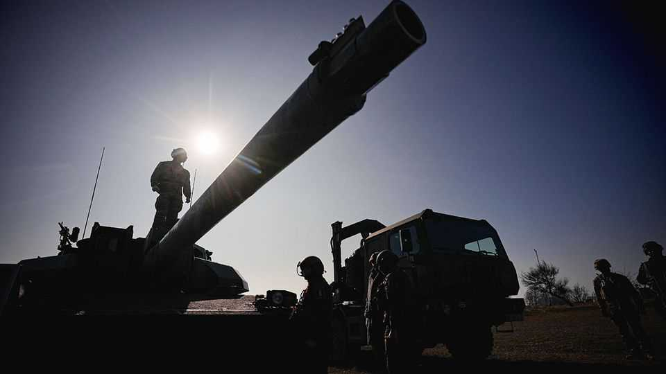

Why France is uneasy about German rearmament
Germany could become the benchmark military power in Europe
June 4th 2026

When Russia launched its full-scale invasion of Ukraine in 2022 France and Germany spent nearly the same amount on defence. By 2029 Germany’s defence budget is expected to swell to at least €150bn ($174bn)—roughly double France’s. For European security, German rearmament is plainly welcome. Yet in Paris the prospect also prompts discomfort. The risk, General Fabien Mandon, head of the armed forces, told a Senate hearing last month, is that in five years France “falls behind” its neighbour in the field it has hitherto dominated.
The Franco-German link was forged around an implicit equilibrium: France carries the military burden, while Germany provides economic might. As the EU’s only nuclear power, and with a strong expeditionary and strategic culture, France is used to taking the lead. For example, Emmanuel Macron, the president, has partnered with Britain to set up a “coalition of the willing” for Ukraine to be deployed in the event of a ceasefire. Germany has signed up, but Friedrich Merz, the chancellor, is reluctant to commit ground troops. Indeed French military types are dismissive about Germany’s low appetite for risk, and its tendency to need American reassurance. “We have to be able to think about waging war differently, and without America, but they are absolutely not ready to think about this,” says a French military official. On most defence matters, the French still find that they are far more in tune with the British.
Across Europe Mr Merz’s promise to make the Bundeswehr “the strongest conventional army in Europe”, with a 40% increase in troops by 2035, is broadly applauded. Mr Macron has long argued for greater European “strategic autonomy”. A bigger German contribution could help achieve that ambition. Poland and the Baltics are reassured by the prospect, as is Italy. A poll last year suggested that 48% of Poles think a reinforced Bundeswehr would improve Poland’s security, with just 25% disagreeing. Yet, behind closed doors, the French are uneasy—and not only out of frustration that they do not have the fiscal space to spend as much. “It’s the elephant in the room,” says a top French military figure. That Germany might have the biggest army in Europe is “unthinkable for us”.
Germany has invaded France three times, but nobody in the French establishment seriously thinks it might pose a threat to its NATO allies. The popularity of the populist-right Alternative for Germany stirs concern, but mainly due to its pro-Russian tilt. Yet a desire to embed German power in larger organisations, the EU and NATO, has long guided French geopolitical thinking. “Beneath the relief”, suggested Franziska Brantner, co-head of Germany’s Greens, in a speech about rearmament last month, “[allies] also feel something they are too polite to say loudly: a quiet, persistent, historically rooted unease at the prospect of a continent in which the dominant military power, by a considerable margin, is once again Germany.”
One genuine worry is industrial rivalry. France has leading defence firms such as Dassault, Thales, Safran and Naval Group, which have won big recent export contracts. But in other sectors, such as the manufacture of combat tanks, the two countries compete for exports. If Germany’s extra spending goes on improving technology and more efficient production, this could leave France behind. As it is, infighting between Dassault (a French aircraft-maker) and the German division of Airbus over the joint Future Combat Air System—a pet project of Mr Macron’s which includes a next-generation fighter jet—threatens the project’s survival.
For France, any future imbalance in conventional forces will be countered by its nuclear deterrent. In March Mr Macron proposed a new doctrine of “forward deterrence”, an arrangement with other European countries in which Germany will be the “key” partner. The idea is that European conventional forces should help “shoulder” the French deterrent, in exercises or deployments of France’s nuclear-capable fighter jets. Indeed, Michel Duclos, of the Institut Montaigne, a think-tank, suggests that “forward deterrence” could be seen as a further way to bind an expanding German conventional force into a broader European project.
In the short run the political consequences of the spending gap may be limited, argues François Heisbourg of the Foundation for Strategic Research in Paris, notably because of France’s deterrent. But were France to elect the populist-right National Rally (RN) in next year’s presidential election, this would bring fresh tension. Jordan Bardella, a possible RN candidate, says France’s nuclear deterrent should be extended only to allies who buy French, not American, fighter jets. Other European nationalists also want to attach strings: Poland’s want German rearmament to be accompanied by war reparations.
For now, German leadership within the EU is likely to continue to lean heavily on its economic clout. Its strategic credibility remains to be earned. Yet General Mandon argues that France cannot be complacent even on this point. “In five years’ time, the argument that we have operational experience and a certain culture will no longer hold,” he told the Senate. “For the Americans, Germany is little by little becoming the European benchmark.” ■
To stay on top of the biggest European stories, sign up to Café Europa, our weekly subscriber-only newsletter.